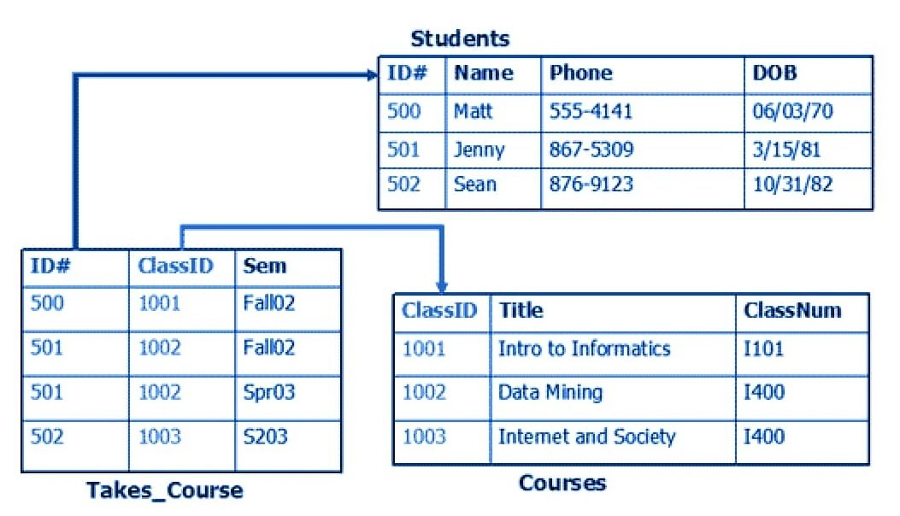
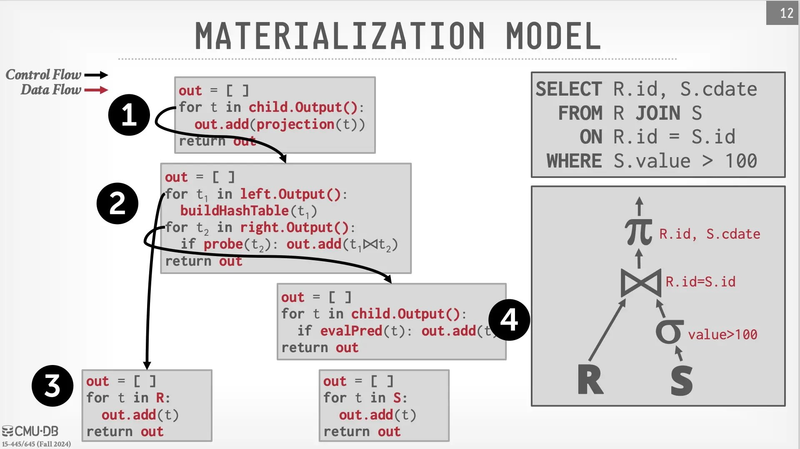
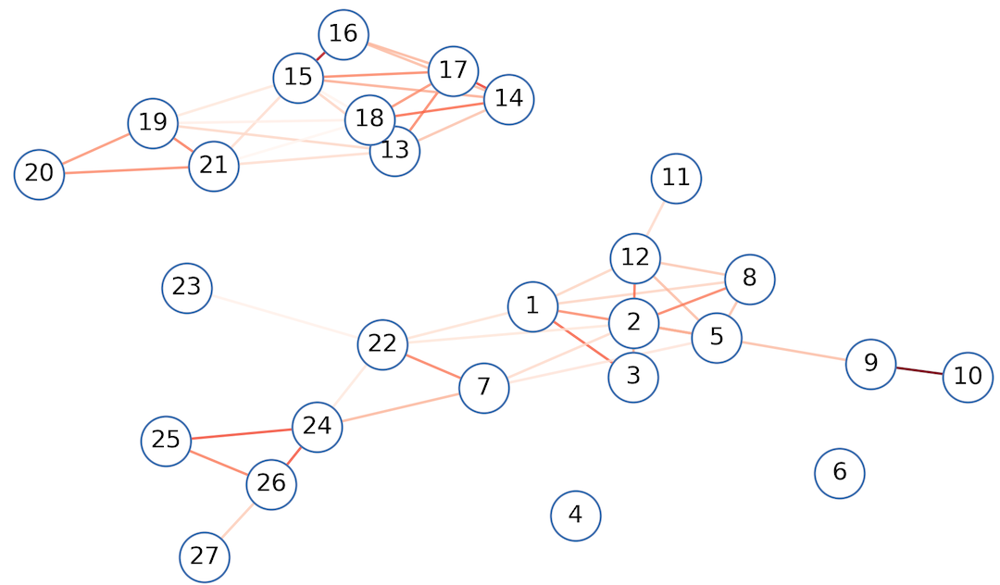

数据库系统
Review & Comments
持久化：文件系统
- Linux: 块设备上的一个数据结构
- 支持 crash consistency 和 recovery
我们用文件系统来做什么？
- 保存应用程序用的数据
- 我们总是通过应用程序访问文件 (哪怕是 cat, sort)
- 课件.pptx, 作业.docx, 电影.mp4, Projects/oslabs/…
- 这也是为什么应用程序的 crash consistency 也很重要
- 文件系统提供了 “原始” 的 API
- 文件 (byte array)、目录
- 有没有更好的保存应用程序数据的方法？
1. 持久保存应用数据
1.1. 使用目录和文件
Everything is a File
ehall.nju.edu.cn/teacherJxrwApp/22020230/4
├── enrollment
│ ├── 231220001.md
│ └── ...
├── syllabus
│ ├── 1-intro.md
│ └── ...
└── textbook
└── 1-ostep.md
UNIX 世界中的工具都能用了：find, grep, …
- 甚至可以用 symlink 去实现 “引用” (enroll/id/student -> …)
- 自动得到的 agent friendly (非常巨大的优势)
优点和缺点
Tool friendly 和 agent friendly 的代价
- Crash consistency 实现需要小心
- 最好是 append-only 的
- 性能稍差一些
- 每次都需要去文件系统 API 绕一圈，还有隐藏的读/写放大
结论：小规模系统 (例如课程主页) 的选择
- 提交存储在
/var/www/filerecv/OS2026/M1/[stuid]-
2026-04-04-19-26-43.tar.bz2: 提交 -
2026-04-04-19-26-43.tar.bz2.result: 结果
-
- 统计 Accepted 数量：
cat **/*.result | grep ... | wc -l - Rejudge M5:
echo M5/**/*.result | xargs rm
1.2. 直接保存数据结构
一个有趣的 Hack
直接在文件 (虚拟磁盘) 上构建数据结构
- 就像 ELF, BMP, …
struct superblock {
struct student *s;
struct course *c;
}
struct student { char stuid[16]; ... };
struct course { char cid[16]; ... }
- 实现数据结构的 CRUD:
expel(s);enroll(s, c);…
甚至可以直接把数据结构 mmap 到内存，直接 persist 指针
- 坑：mmap region 不会自动 write-back
- 需要 msync (2); 而且 msync 并不保证 crash consistency
- 还需要额外的 fdatasync
Memory-mapped 数据结构
如果我们总是把数据结构映射到固定的位置 (并且为数据结构的分配使用专用的分配器，总是从固定位置分配)，就可以直接把数据结构映射到磁盘上，甚至也可以实现 write-ahead log。
你甚至可以实现 WAL Log
比大家想象的简单
struct superblock {
u32 magic;
char wal[256];
...
};
- 对于任何数据结构操作，先把所有的 side effects 写入 wal
- (代码示例里偷懒了，只记了命令，crash 时数据结构是一致的)
- 然后执行操作，清除 WAL
恭喜你，发明了 “single-level store” 操作系统！
- 在 persistent memory 时代很有可能复活
2. 关系型数据库
需求：一个非常非常好的数据结构
好用
- 能处理几乎任意类型的数据结构
- 好对任何人来说都比较好上手
性能
- 全校一起选课，系统不能崩 (不能一把大锁保平安)
持久化 (Crash Consistent) 和一致性
- 系统故障，数据不能丢
- 数据结构需要支持 multi-write
- 例子：批量导入学生选课信息，需要 all-or-nothing
- 同时满足这些需求的东西真的能存在吗？
反思：我们是怎么实现数据结构的？
我们的计算机是 Pointer machine
- 实现数据结构其实不需要 “数组”
- malloc(constant) 分配固定大小的内存，就能实现任意数据结构
Pointer 是对象之间的关系
struct node {
char value[32]; // Record
struct node *left, *right; // Pointers
}
- 离散数学：整个计算机世界都是在二元关系上 foramlize 的
Relational Database (关系型数据库)
一个 surprisingly simple 的模型
-
A relational model of data for large shared data banks
- Edgar F. Codd: 1981 Turing Award Winner
- “Future users of large data banks must be protected from having to know how the data is organized in the machine.”
- 我做了很多年 program synthesis; 但凡是 end-user 的，最后的设计理念都会回到这一篇 paper
Everything is a table
- 每行一个对象；对象可以用 id 索引其他对象
- struct = table 的一行
关系数据库模型
“对象和指针”

关系数据库查询：指针 “配对”
SELECT Courses.Title
FROM Student
JOIN Takes_Course
ON Student.ID = Takes_Course.ID -- Key
JOIN Courses
ON Takes_Course.ClassID = Courses.ClassID -- Key
WHERE Student.Name LIKE '张%'
从模型到实现：数据库系统
“ACID” 数据库开启软件的新时代
- A (Atomicity), C (Consistency), I (Isolation), D (Durability)
- Serializability: 并发执行的效果等价于某种串行执行
- Strong crash consistency: 系统 crash 也不会损坏或丢失
支持任意长 (允许混合任意计算) 的 Transaction
- 这个特性太重要了
tx_begin();
if (user1.balance < m) tx_abort(); // SQL
user1.balance -= m; // SQL
user2.balance += m; // SQL
tx_commit();
ACID 数据库
学过《操作系统》就很好理解了
- 并发执行的效果 = 一把大锁保平安
- 但性能远优于粗粒度加锁
- 完全自动的崩溃恢复
- 应用数据交给数据库 = 一劳永逸
- 甚至在应用有 bug 的时候，都还可以强行抢救
关系数据库：海量的实现优化
- 查询优化 (rewriting)
- 索引 (B+ Tree 等数据结构)
- 缓存、分库分表、并发控制、读写分离……
- 只要不是大到 “国民级” 的应用，数据库都能搞定
2.1. 数据库系统：实现
Databases v.s. Compilers
实现查询 = 实现编译优化 (语义等价的 rewriting)
- 我选择抄作业 (CMU 15-445, Andy Pavlo) 😂

一个超级复杂的并发程序
每个 SQL 都操作数据库的一部分
- Write(x)
- Read(y)
- 用于维护 “磁盘上的数据结构”
- 类似文件系统，write-ahead logging (crash consistency)
但并发控制更困难
- T_1:
tx_begin(); x = 1; may_crash(); y = 2; tx_commit() - T_2:
tx_begin(); y = 1; sleep(100000); x = 2; tx_commit()- 2 Phase Locking: 由于 Tx 可以执行任意代码，所以只能 “边执行边上锁” + deadlock detection，遇到死锁就 rollback，commit 时释放
- MVCC: 每次都开一个新的 git branch (copy-on-write)，commit 的时候向 main merge，检测到冲突就 rollback
例子：SQLite
无处不在的数据库
SQLite is a C-language library that implements a small, fast, self-contained, high-reliability, full-featured, SQL database engine. SQLite is the most used database engine in the world…
- 一个基于文件实现的支持 SQL 的 “数据结构”
- Android, iOS, macOS, Chrome, … 中广泛内嵌了 SQLite
- Zero Configuration (发行版自带 libsqlite3.so；适合 “年轻人的第一个应用”)

3. 从 SQL 到 NoSQL (NewSQL)
实现 “国民级” 的应用
“透明” 的 SQL 就有些困难了
SELECT *
FROM chat_records
WHERE (sender_id = @user_id1 AND receiver_id = @user_id2)
OR (sender_id = @user_id2 AND receiver_id = @user_id1)
ORDER BY timestamp DESC
LIMIT 10
- 正确，但压力给到数据库引擎
- 分库、分表、读写分离、索引、缓存、优化……
- 永远无法预知程序员会写出怎样的 query
- 提供了功能 = 被滥用 → Performance Bug
- 任何 “Systems” 都无法避免的 tech debt
- 例子：fork()
解决办法：做减法
只支持一个 “够用” 但可以 scale out 的 subset
- Key-value store
- 应用程序全靠 key 管理数据
user:{uid}user:{uid}:like_history (a list)- List 支持 append/pop/range 等操作
- 应用场景：🍠 上的点赞/浏览/历史记录
关键的性能优化
- 给 key 做 hash，load balance 到多台机器上
- Everything is append-only
- LSM-Tree; 只支持 append 的 list; …
- 分布式高性能、高可靠就完成了
Redis: Everything is In-memory
核心：key-value store (GET, SET)
- 支持存储数据结构：String, List, Set, Hash, Sorted Set, …, Stream
- 支持查询
FT.SEARCH products "@price:[200 300] @category:misc"
- 甚至支持 MULTI/WATCH/EXEC 事务
应用：高性能缓存
- 点赞插入
user:{uid}:like_history; 更新user:{uid}:like_count - 定期合成一条 persistent 数据库的插入
NoSQL & NewSQL
提供 SQL 的一个子集
- MongoDB (Document):
- Key → BSON (Binary JSON，比 JSON 支持更多类型)
- 例子：创建一个新 document (message)，然后 append 到
user:{uid}.messages
- Cassandra (Column)
- CQL: 依然是 Table 的模型
- (限制程序员的滥用)
INSERT INTO messages (user_id, message_id, content, timestamp)
VALUES ('1234567', now(), message, toTimestamp(now()));
甚至提供完整的 SQL 支持
- Google Spanner; TiDB; CockroachDB
Vector Database
AI 应用的新基础设施
- Embedding model: 将 context 映射为高维向量 (距离越近，语义越近)
- Vector database: 存储和检索向量的数据库
- ANN: Approximate Nearest Neighbor 返回 “最近” 的文档
